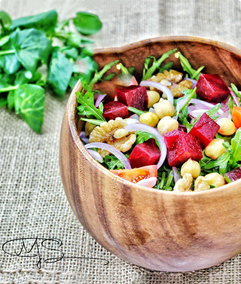

Fatoush SALAD
Ingridients
2 loaves pita bread
Early Harvest Extra Virgin Olive Oil
1/2 tsp sumac, more for later
Salt and pepper
1 heart of Romaine lettuce, chopped
1 English cucumber, chopped
5 Roma tomatoes, chopped
5 green onions (both white and green parts), chopped
5 radishes, stems removed, thinly sliced
2 cups chopped fresh parsley leaves, stems removed
1 cup chopped fresh mint leaves (optional)
Recipe Directions
need to share the recipe directions
Plate as pictured and serve